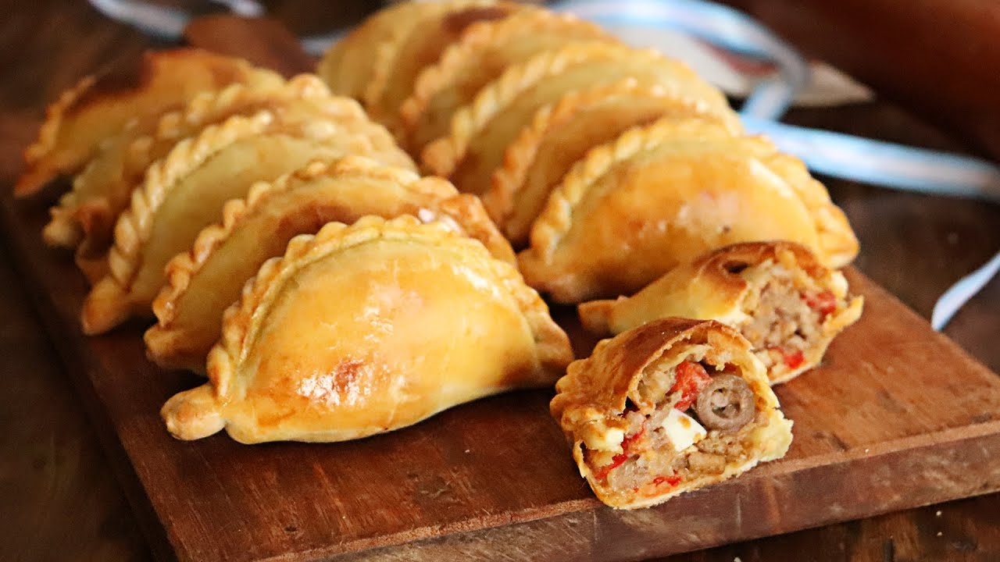

estilo gourmet
coccion
- sacar empanadas del freezer.
- precalentar el horno en 180.
- quitarles el envoltorio de plastico.
- colocarlas en una bandeja enmantecada o aceitada.
- llevarlas al horno por 15 o 20 min dependiendo de tu horno.
- sacalas y a disfrutar de las mejores empanadas!

chef
- chef Rodrigo Alonso Picco - villa ballester
- sabor tradicional con el estilo gourmet
- comida gourmet freezada
- del freezer al horno en 15
- llevarlas al horno por 15 o 20 min dependiendo de tu horno.
- sacalas y a disfrutar de las mejores empanadas!